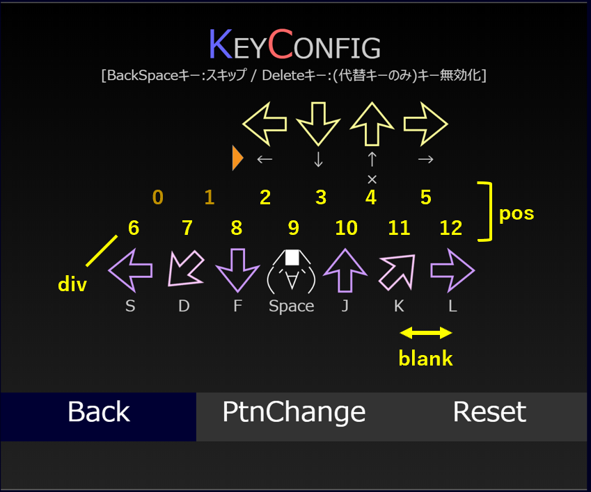

Dan☆Oniの各キーは、キーとパターンの組み合わせから成っています。
以下であれば、11keyの1番目（0番目）のパターンであることを示します。
pos11_0
同じキーに属するパターンの設定は似ていますが、
全く別のキーの扱いです。設定も個別に変更できます。
配列の記載順は、必ず左から右、上から下になるよう記載が必要です。
| 要素 | 意味 | 詳細 |
|---|---|---|
| charaX_Y | 読込変数の接頭辞 | left_data, down_dataなどの _dataより前の文字列を表す。 |
| colorX_Y | 矢印色の割り当て | 譜面データ内「setColor」で記載のカラーコードを割り振る。 通常0～4が利用可能で、それぞれ「setColor」を配列にした場合の番号に対応した色が初期色として割り当てられる。 |
| stepRtnX_Y | 角度/AAの種類 | 左向き矢印を基準に、何度回転した矢印を配置するかを表す。 もしくは、対象のアスキーアート(AA)を指定する。 指定できるAAは、「onigiri」「giko」「iyo」「c」「morara」「monar」の6種類。 |
| posX_Y | ステップゾーン位置 | ステップゾーンを等間隔で置いた場合に、どこに置くかを示した数字。上記画像参照。 等間隔にしたくない場合は、上の例のように番号をスキップすることでステップゾーンを置かないこともできる。 |
| divX_Y | 上段/下段折り返し位置 | ステップゾーンの上段、下段を折り返す位置を指定する。 指定対象は、posX_Yの値を使用。初めて下段となる数字を指定する。 上段/下段の括りがない場合は、最後の数字+1を指定する。 |
| blankX_Y | ステップゾーン間隔(X座標) | ステップゾーンの間隔を指定。指定がない場合は、通常55pxとなる。 |
| keyCtrlX_Y | キーコンフィグ | 各ステップに対応するキーコードを指定。多次元配列で表現する。同じステップに対して複数のキーを割り当てることも可能。 |
文字で書いてもピンと来ないかもしれないので、
具体的に11keyのパターン0(1番目)の例を見ていきましょう。
設定値はこんな感じになっています。並び順は左から右、上から下の順です。
| 要素 | 実際の値 |
|---|---|
| chara11_0 | ["sleft", "sdown", "sup", "sright", "left", "leftdia", "down", "space", "up", "rightdia", "right"] |
この場合、下記のような譜面形式で読み込みができます。(数字は省略)
|sleft_data=...|sdown_data=...|...|right_data=...|
| 要素 | 実際の値 |
|---|---|
| color11_0 | [3, 3, 3, 3, 0, 1, 0, 2, 0, 1, 0] |
| setColor | 0xcc99ff, 0xffccff, 0xffffff, 0xffff99, 0xff9966 |
一番上の画像において、上段は3(=#ffff99, 黄色)、
下段の奇数番目は0(=#cc99ff, 紫色)、偶数番目は1(=#ffccff, ピンク)、
おにぎりは2(=#ffffff, 白色)となっています。
| 要素 | 実際の値 |
|---|---|
| stepRtn11_0 | [0, -90, 90, 180, 0, -45, -90, "onigiri", 90, 135, 180] |
一番上の画像において、左矢印を基準にすると
-90°は下矢印、90°は上矢印、180°は右矢印となります。
"onigiri"の箇所はおにぎりになっていますね。
| 要素 | 実際の値 |
|---|---|
| pos11_0 | [2, 3, 4, 5, 6, 7, 8, 9, 10, 11, 12] |
| div11_0 | 6 |
一番上の画像の黄色文字で数字を入れました。
数字が6と書いてあるところから下段に折り返しています。
0と1は指定が無いので、矢印が表示されていません。
| 要素 | 実際の値 |
|---|---|
| keyCtrl11_0 | [ [37], [40], [38, 0], [39], [83], [68], [70], [32], [74], [75], [76] ] |
キーコードが書かれています。
これだけだとピンときませんが、3番目だけ要素が2つあるのが確認できると思います。
この部分は代替キーがあることを表します。
自分で作ったキーを公開する場合、譜面データに記述が必要です。
基本的な考え方は上述と全く同じですが、記述方法が少し異なります。
追加するキーのリストです。カンマ区切りでいくつでも追加できます。
|keyExtraList=6|
それぞれ、colorX_Y, charaX_Y, divX_Y, stepRtnX_Y, keyCtrlX_Y, blankX_Yに相当します。複数指定の場合は"$"で区切ります。
keyCtrlの場合、代替キー指定はスラッシュ(/)で区切ります。
| 要素 | 指定の仕方 |
|---|---|
| colorX | color6=0,1,0,1,0,2$0,1,0,1,0,2 |
| charaX | chara6=arrowA,arrowB,arrowC,arrowD,arrowE,arrowF$arrowA,arrowB,arrowC,arrowD,arrowE,arrowF |
| divX | div6=6$3 |
| stepRtnX | stepRtn6=0,45,-90,135,180,onigiri$0,45,-90,135,180,onigiri |
| keyCtrlX | keyCtrl6=75,79,76,80,187,32/0$75,79,76,80,187,32/0 |
| blankX | blank6=60$60 |